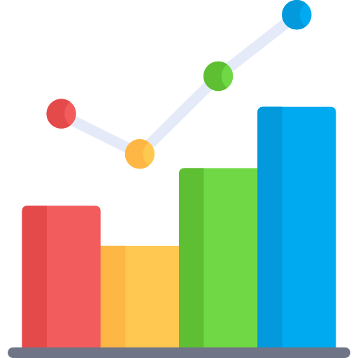

Ingresos de usuarios

Ver qué usuario ingresó, en qué día y a qué hora
Turnos por especialidad
Ver la cantidad de turnos por especialidad
Turnos por día

Ver la cantidad de turnos solicitados por día de la semana
Turnos solicitados